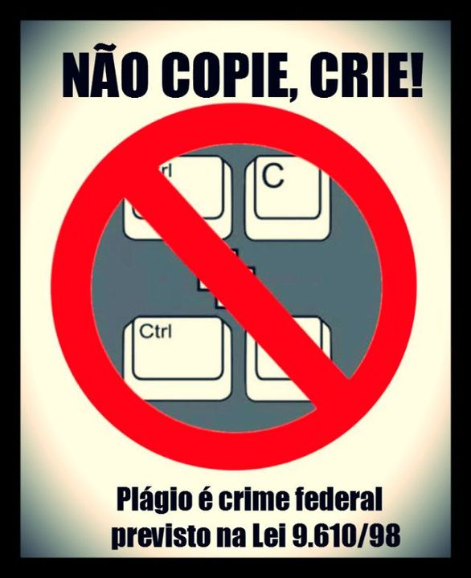

Galeria Visual

Legenda: É fundamental estabelecer limites saudáveis no ambiente digital.
O uso desenfreado das plataformas digitais tem se tornado um fator crítico para a saúde mental contemporânea. A exposição constante a vidas idealizadas fomenta gatilhos de ansiedade, baixa autoestima e o ciclo prejudicial da comparação social.

Legenda: É fundamental estabelecer limites saudáveis no ambiente digital.